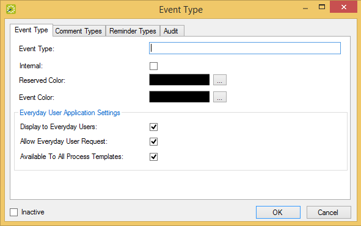

Event Types Window
You can configure event types, which you use to classify or categorize the different events that your organization has. For example, you might configure lectures, meetings, and conferences, and so on as some of your event types.
To configure event types, follow these steps:
Event Types Window
Optionally, to view all event types in your EMS database, regardless of status, under Show, click Inactive.

Event Type Dialog, Event Tab
|
Field |
Description |
|---|---|
|
Event Type |
The name or classification for the event. The event type can be a maximum of 30 characters, including spaces. |
|
Internal |
Indicates that the event type is internal to your organization. Used for internal reporting purposes only. The event type is not printed on external documents such as confirmations and invoices, and it is not hidden in any area of your EMS application. |
|
Reserved Color |
Select the color that is to be used in the Reservation Book to indicate when the reserved time extends past the event time. |
|
Event Color |
Select the color that is to be used in the Navigator and in the Reservation Book to indicate this type of event. As of Update 22, you can view the event type color and status color simultaneously from the Reservation Book. See Also: Using the Reservation BookUsing the Reservation Book. Lighter colors are a better choice so as not to obscure the reservation/booking name. |
|
|
|
|
Display to Everyday Users |
Indicates that events of this type are to be displayed when a user browses for events in EMS Web App. For a booking to appear on Browse Events, the event type, status and room for that booking all have to have Display to Everyday User (DEDU) settings enabled. If one of these properties is not DEDU-enabled, the booking will not appear on Browse Events in the EMS Web App. |
|
Allow Guest Request |
Indicates that this event type is an available option in |
|
Available to All Process Templates |
Select this option to assign this event type to all everyday user process templates. |
|
Inactive |
Leave this option blank to add the event type as an active event type. Select this option to inactivate the event type. |

Event Type Dialog, Comment Types Tab
If the appropriate comment type is not available, you can configure it. See Configure Comment Types.

Reminder Types Tab of the Event Type Dialog
If the appropriate reminder type is not available, you can configure it. See Configure Reminder Types.